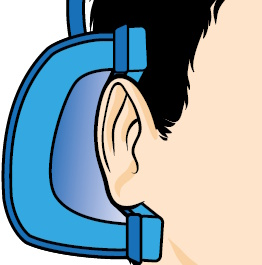
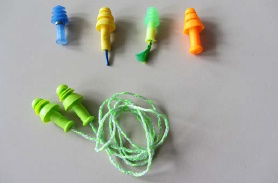
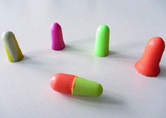
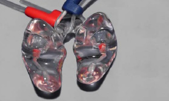
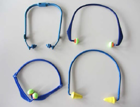
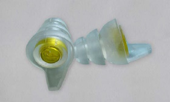
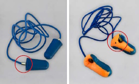

4.1.1 Allgemeines
Alle Gehörschützer mit Kapseln, die die beiden Ohrmuscheln umschließen, sind Kapselgehörschützer. Es sind drei Arten zu unterscheiden:
4.1.2 Passive Kapselgehörschützer
Konventionelle Kapselgehörschützer (siehe Abbildung 2) werden mit unterschiedlichen Bügelkonstruktionen - Kopfbügel, Nackenbügel, Kinnbügel, Universalbügel - als Verbindungselemente der Kapseln geliefert. Kapselgehörschützer mit Universalbügel sind gegen Verrutschen zusätzlich mit einem Kopfband ausgerüstet.

Abb. 2 Aufbau eines Kapselgehörschützers mit Kopfbügel
4.2.1 Allgemeines
Alle Gehörschützer, die im Gehörgang oder in der Ohrmulde getragen werden, sind Gehörschutzstöpsel. Es sind folgende Arten zu unterscheiden:
Einige Typen werden wahlweise mit und ohne Verbindungsschnur, in verschiedenen Größen oder mit elektronischen Zusatzeinrichtungen (siehe Abschnitt 4.6) angeboten.

Abb. 3 Fertig geformte Gehörschutzstöpsel

Abb. 4 Vor Gebrauch zu formende Gehörschutzstöpsel

Abb. 5 Gehörschutz-Otoplastiken

Abb. 6 Bügelstöpsel
4.2.2 Fertig geformte Gehörschutzstöpsel
Merkmal der fertig geformten Gehörschutzstöpsel, die in einer Vielzahl verschiedener Ausführungen angeboten werden, ist es, dass sie sofort ohne vorherige Formgebung in den Gehörgang eingesetzt werden können. Für die verschiedenen Gehörgangsweiten werden Modelle mit mehreren weichen, quergestellten, kreisförmigen Lamellen wachsenden Durchmessers oder Sortimente einzelner Typen verschiedener Nenngrößen angeboten. Zum Teil sind diese fertig geformten Gehörschutzstöpsel mit akustischen Filtern erhältlich (siehe Abbildung 7), was eine Anpassung der Schalldämmung an die Geräuschsituation erlaubt. Manche Produkte ermöglichen durch einen akustischen Filter einen definierten langsamen Druckausgleich zwischen dem abgeschlossenen Gehörgang und der äußeren Umgebung.

Abb. 7 Lamellenstöpsel mit akustischem Filter
Fertig geformte Gehörschutzstöpsel sind in der Regel für den mehrmaligen Gebrauch vorgesehen. Ihr Vorteil liegt dann in ihrer Dauerhaftigkeit und der Möglichkeit, sie ohne Beeinträchtigung der Funktionsfähigkeit mehrmals am Tag einsetzen zu können. Wegen der großen Individualität der Gehörgangsformen und -querschnitte und der daraus resultierenden unbefriedigenden Passform können fertig geformte Gehörschutzstöpsel beim Tragen unangenehme Druckempfindungen verursachen. In diesen Fällen sollte ein anderer Gehörschützer ausprobiert werden.
4.2.3 Vor Gebrauch zu formende Gehörschutzstöpsel
Gehörschutzstöpsel aus polymerem Schaumstoff (z. B. Polyurethan oder Polyvinylchlorid) werden vor dem Einsetzen in den Gehörgang zu einer dünnen Rolle zusammengedrückt und dehnen sich dann im Laufe einiger Sekunden wieder aus, so dass der Gehörgang akustisch gut abgeschlossen wird. Die Auflagefläche des Gehörschutzstöpsels an der Gehörgangshaut ist relativ groß und das erzeugte Druck-/Fremdkörpergefühl daher gering. Entsprechend den Angaben der Herstellfirma sind Gehörschutzstöpsel aus polymerem Schaumstoff zum mehrfachen oder zum einmaligen Gebrauch bestimmt.
4.2.4 Bügelstöpsel
Bügelstöpsel bestehen aus fertig geformten Gehörschutzstöpseln, die an Bügeln befestigt sind. Bei vielen Typen kann der Bügel im Nacken, über dem Kopf oder unter dem Kinn getragen werden.
4.2.5 Gehörschutzstöpsel mit Verbindungsschnur
Gehörschutzstöpsel mit Verbindungsschnur bestehen aus fertig geformten oder vor Gebrauch zu formenden Gehörschutzstöpseln, die an den Enden einer Trageschnur befestigt sind.
4.2.6 Detektierbare Gehörschutzstöpsel
In Lebensmittelbetrieben ist es wichtig, Fremdkörper im Produkt detektieren und ausschleusen zu können. Dazu werden entweder einzelne Metallringe oder -kugeln am oder im Gehörschutz angebracht (siehe Abbildung 8), ein Draht durch den Bügel/die Schnur gezogen oder kleinste Metallteile in das Material des Stöpsels gegeben.

Abb. 8 Gehörschutzstöpsel mit Metallösen (rote Markierung) zur Detektierbarkeit
Gehörschutz-Otoplastiken sind eine Sonderform der fertig geformten Gehörschutzstöpsel. Sie werden individuell nach dem Ohr und insbesondere dem Gehörgang des Trägers geformt und verschließen den Gehörgang, ohne (in normaler Kopfhaltung) einen Druck auf die Gehörgangwandungen auszuüben. Einige Modelle werden mit verschiedenen akustischen Filtern angeboten. Bei der Beschaffung ist der geeignete Filter entsprechend den Erfordernissen am Arbeitsplatz auszuwählen.
Druckerscheinungen sind bei Gehörschutz-Otoplastiken aus hartem Material möglich, wenn während der Benutzung erhebliche Kopfbewegungen ausgeführt werden.
Der Einsatz setzt eine Funktionskontrolle vor der ersten Verwendung und danach regelmäßig im Abstand von maximal drei Jahren voraus (siehe Abschnitt 8.2).
Bei sehr hohen Schalldruckpegeln kann die Schutzwirkung, die ein Gehörschutz allein bietet, unter Umständen nicht ausreichen, um den Restpegel am Ohr ausreichend weit zu reduzieren. In solchen Fällen kommt eine geprüfte Kombination aus Gehörschutzstöpsel/Gehörschutz-Otoplastik und Kapselgehörschutz zum Einsatz. Im Prinzip sind alle Gehörschutzstöpsel außer Bügelstöpseln geeignet. Bei Lamellenstöpseln und Gehörschutz-Otoplastiken ist darauf zu achten, dass der Stiel, Handgriff o.ä. nicht mit der Innenseite des Kapselgehörschützers Kontakt hat. Dies könnte den Sitz des Stöpsels verändern oder zu Druckerscheinungen und Reibgeräuschen führen. Neben Kapselgehörschützern mit Bügel oder zur Helmmontage kommen auch Lärmschutzhelme in Frage.
Die bekannteste Kombination in diesem Bereich sind Kapselgehörschützer zur Montage an einem Industrieschutzhelm. Die Kapseln können mit Hilfe von Verbindungselementen an dafür vorgesehenen Industrieschutzhelmen befestigt werden. Diese Kombination gibt es als Einheit oder auch als Ausrüstung zur Selbstmontage. Dabei sollten nur geprüfte und zulässige Kombinationen verwendet werden.
Die Anforderungsnorm DIN EN 352-3 lässt auch die Prüfung von Kapselgehörschützern in Kombination mit weiteren Kopf- oder Gesichtsschutzausrüstungen zu, z. B. andere Helme nach DIN EN 14052 oder DIN EN 12492 oder Visiere nach DIN EN 166.
Andere Normen für festgelegte Kombinationen existieren derzeit nicht.
Es sind auch Schutzbrillen erhältlich, die die Befestigung von Gehörschutzstöpseln mit Verbindungsschnur erlauben, so dass die Gehörschützer immer griffbereit sind.
Kombinationen mit anderen am Kopf getragenen Ausrüstungen sind jeweils auf ihre Eignung zu prüfen.
4.6.1 Pegelabhängige Schalldämmung
Mit einer elektroakustischen Ausrüstung werden schwache Signale am Ohr verstärkt. Mit zunehmender Stärke der Signale und Geräusche nimmt dabei die Verstärkung ab. Der Schalldruckpegel am Ohr (Innenpegel) setzt sich zusammen aus dem passiv gedämmten Schalldruckpegel und dem durch die Elektronik erzeugten Schallanteil. Der Kriteriumspegel gibt an, bis zu welchem äußeren Schalldruckpegel (Außenpegel, hier: Tages-Lärmexpositionspegel) der Gehörschützer eingesetzt werden darf, ohne den maximal zulässigen Expositionswert zu überschreiten.
Das Verstärker- und Frequenzverhalten von Gehörschützern mit pegelabhängiger Dämmung ist sehr produktspezifisch. Generell gilt: In leisen Arbeitsphasen kompensiert die Elektronik die Schalldämmung der Gehörschützer und gleicht damit die Hörschwellenverschiebung durch den Gehörschutz aus. Dies führt zu einem schnelleren Erkennen von Geräuschen und Signalen. Typischerweise ist der durch die Elektronik erzeugte Schalldruckpegel auf maximal 82 dB(A) begrenzt.
Allerdings wird die Sprachverständlichkeit bei Benutzung pegelabhängig dämmender Gehörschützer insbesondere vom Anstiegsverlauf des Innenpegels bei steigendem Außenpegel (pegelabhängiges Verstärkungsverhältnis) bestimmt. Da dieser Anstiegsverlauf von der Herstellfirma nicht angegeben werden muss, ist die Auswahl schwierig. Der Gehörschutz sollte mit steigenden Außenpegeln auch im Bereich über 80 dB(A) einen Anstieg des Innenpegels zur Folge haben. Im anderen Fall sind die Pegel des Störgeräuschs allein bzw. von Störgeräusch und Sprachsignal unter dem Gehörschutz gleich laut und die Verständigung ist schwierig.
Die Wahrnehmung von Sprache, von informationshaltigen Arbeitsgeräuschen und akustischen Signalen ist insbesondere bei Arbeitsabschnitten mit niedrigen Schalldruckpegeln bis etwa 82 dB(A) in der Regel besser als beim Tragen anderer Gehörschutzarten. Die Qualität der Übertragung hat allerdings entscheidenden Einfluss auf die Verständlichkeit der Sprache. Bei hohen Schalldruckpegeln können in Abhängigkeit von der passiven Dämmwirkung des Gehörschützers Schalldruckpegel von über 85 dB(A) am Ohr wirksam werden.
Standardmäßig ist die Frequenzabhängigkeit der Verstärkung bei diesen Produkten von der Herstellfirma fest vorgegeben. Die Benutzer und Benutzerinnen können nur die Lautstärke ändern. Es sind einzelne Produkte erhältlich, die vor Auslieferung an die Benutzer und Benutzerinnen eine individuelle Einstellung der Verstärkungsparameter erlauben. Damit ist z. B. die Anpassung an einen Hörverlust möglich, wenn (noch) keine Indikation für ein Hörgerät am Lärmarbeitsplatz gegeben ist. Weitere Informationen finden sich in Abschnitt 8.3.
4.6.2 Sicherheitsrelevante Kommunikation
Gehörschützer mit Kommunikationseinrichtung ermöglichen es, drahtlos (Bluetooth, DECT, PMR 446) oder über Kabelverbindungen Informationen, die für den Fortgang der Arbeit nötig sind, zu übertragen. Es gibt Systeme, die Informationen nur in eine Richtung übertragen können und andere, die den Dialog zwischen den Beschäftigten auch in Lärmbereichen ermöglichen.
4.6.3 Kommunikation zu Unterhaltungszwecken
Diese Funktionalität ("Entertainment") kann über verschiedene Anschlusstechniken realisiert werden. Generell besteht die Anforderung nach DIN EN 352-8 bzw. -10, dass der vom Wiedergabegerät am Ohr erzeugte Schalldruckpegel auf 82 dB(A) begrenzt ist, um eine zusätzliche Gehörgefährdung durch laute Musik o.ä. auszuschließen.
Eine genutzte Übertragungstechnik ist UKW- oder DAB+-Empfang mittels eines im Gehörschutz eingebauten Moduls. Analog zu Produkten für die sicherheitsrelevante Kommunikation ist auch eine Informationsübertragung über Bluetooth (Entertainment-Profile wie A2DP) oder kabelgebunden möglich.
4.6.4 Aktive Geräuschkompensation
Im Gehörschützer können Geräusche durch zeitlich versetzten (Anti-) Schall gemindert werden (Active noise reduction, ANR bzw. Active noise control, ANC). Dieser setzt sich aus etwa gleichen Schalldruckpegeln und Frequenzen zusammen wie die auszulöschenden Geräusche. Die Überlagerung der beiden Signale führt zur Schall-Auslöschung (noise-cancelling). Die beste Wirkung zeigt diese Technik bei tiefen Frequenzen.
Anmerkung: Der Begriff "noise-cancelling" wird ebenfalls für die Störschallunterdrückung bei Mikrofonen von Headsets oder Hörgeräten verwendet.
4.6.5 Übersicht der elektronischen Zusatzfunktionen
In Tabelle 1 wird ein Überblick über die derzeit verfügbaren elektronischen Zusatzfunktionen sowie die technischen Umsetzungen in Gehörschützern gegeben.
Tabelle 1 Zusatzfunktionen für elektronische Gehörschützer
| Elektronische Zusatzfunktion inkl. Teil der EN 352 | Funktionsprinzip | Varianten |
| Pegelabhängige Schalldämmung (EN 352-4 bzw. -7) | Außenschall wird in Abhängigkeit vom Pegel verstärkt wiedergegeben. | Je nach Produkt unterschiedlicher Verlauf der Pegelabhängigkeit und Maximalverstärkung relativ zum Außenpegel |
| Sicherheitsrelevante Kommunikation (EN 352-6 bzw. -9) | Übertragung von Kommunikationssignalen | 1. Übertragungstechniken
|
| Kommunikation zu Unterhaltungszwecken (EN 352-8 bzw. -10) | Wiedergabe von "Entertainment"-Inhalten | Übertragungstechniken 1. Kabel (elektrischer Eingang) 2. UKW/DAB+-Radio 3. Bluetooth |
| Aktive Geräuschkompensation (EN 352-5) | Schalldruckpegel unter dem Gehörschutz wird durch Antischall reduziert (höhere effektive Schalldämmung). Wirksamkeit bei tiefen Frequenzen bis ca. 1000 Hz. | Je nach Produkt unterschiedliche Frequenzabhängigkeiten der zusätzlichen Schalldämmung |
Da Hörgeräte den auftreffenden Schall verstärken, dürfen herkömmliche Hörgeräte in Lärmbereichen nicht verwendet werden. Es gibt spezielle Hörgeräte, die für den Einsatz am Lärmarbeitsplatz geeignet und zugelassen sind. Charakteristisches Merkmal ist Ausführung des Ohrpassstücks als Gehörschutz-Otoplastik, ein spezielles Arbeitsschutzprogramm auf Programmplatz 1, so dass es beim Einschalten des Hörgeräts automatisch aktiv wird, und eine Begrenzung des abgegebenen Schalldruckpegels, so dass bis zum produktspezifischen Höchstwert des Außenschalldruckpegels (Kriteriumspegel) bei durchschnittlicher sprachlicher Kommunikation der maximal zulässige Expositionswert von 85 dB(A) nicht überschritten wird.